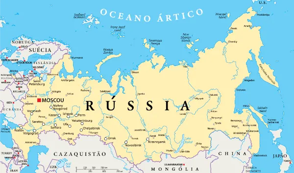
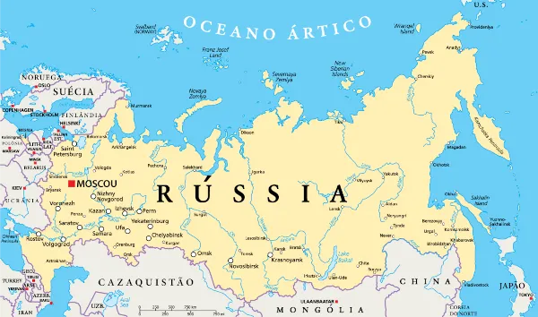

O Alasca foi vendido pelos russos aos Estados Unidos em 1867.
O acordo, conhecido como a "Compra do Alasca", envolveu a transferência do território do Alasca da Rússia para os Estados Unidos por uma quantia de 7,2 milhões de dólares.
Com o tempo, o Alasca revelou-se uma valiosa aquisição devido aos seus recursos naturais, como ouro, petróleo e pesca.
A Rússia é o maior país do mundo, ocupando 1/9 da área terrestre. Sua área é de 17.075.400, o dobro da brasileira. Ela domina metade da Europa e 1/3 do continente asiático.
Moscou é uma das cidades com maior número de bilionários do mundo.
Fuso horário
O mundo está dividido em 24 fusos horários, e a Rússia cobre nada menos que 11 deles. Para se ter uma ideia, países extensos como Estados Unidos e o Canadá, possuem
apenas seis. Quando o leste da Rússia está no meio do dia útil, as pessoas que vivem nas regiões mais ocidentais do país ainda estão dormindo.
O Lago Baikal, situado na Sibéria, Rússia, destaca-se como o lago mais profundo globalmente, atingindo mais de 1.600 metros de profundidade. O que o torna ainda mais notável é que abriga cerca de 20% de toda a água doce não congelada disponível no planeta. Essa imensa reserva de água potável faz do Baikal uma fonte crítica para a preservação da biodiversidade e um recurso essencial para a sustentabilidade global.
 
